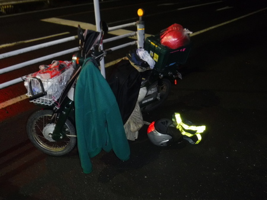
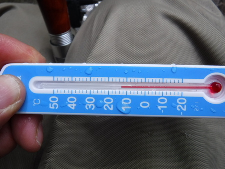
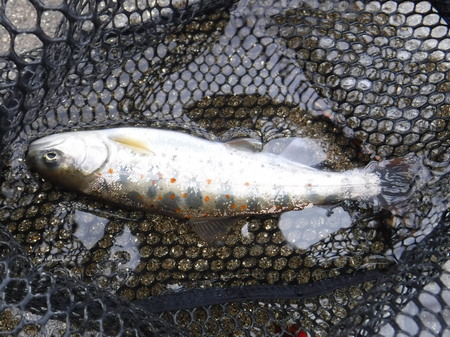
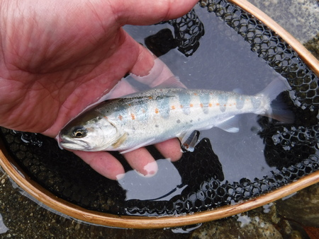
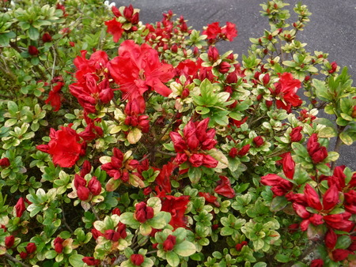
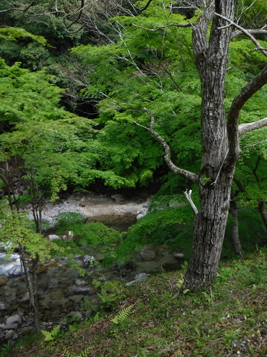

釣行日誌 故郷編
2023/04/19 今シーズン、初の渓流釣行
未明にバイクでアパートを出発する。途中、身も凍る寒さをこらえきれず、バイクを停めてフリースを着る。

集落に着くと、一面朝靄がかかっている。モミジの新緑の中、何かに急かされるように支度をして、川原へ降りる。
渓相は良く、小さいのが何匹かミノーを追ってきた。こちら岸のちょっとした弛みで良型バラシ。痛い。
見込みのありそうな長トロ淵にて反応無し。暗い森の下を抜けて、上流へ。
水温、11.5℃

水温が低くて活性も低いのか、連日の釣り客訪問でスレているのか、どうもミノーを見切られているようだ。昼時になったので、バイクに戻り、特大の重ね海苔弁当を食べる。
午後からは戦法とルアーを替える。一つ覚えの何とかで、釣り下りながら、マイナーであろうと思われるスピナーを試す。橋の下の長瀬を遠投して１尾。

集落前の護床ブロックの下にて、点在する大石の影から出た１尾をキャッチ。

だんだんと釣り下り、以前、反応が良かった堰堤下も、今日は沈黙。さらに下るが、やはり無反応。
おじいさんが畑の草取りをして、取った草を川に捨てていた。道に上がるとおばあさんが居て、立ち話をする。昔、この集落の井戸の無い家では、この川で食器を洗っていたそうだ。
帰途、綺麗なツツジが満開だった

再びバイクを停めた場所に戻り、畑の横に座り込んで、弁当の残りを頂く。
モミジの新緑が、眼に、心に染みる。植物は偉いなぁ.....と想う。時が来れば花を咲かせ、実を付け、種を残し、枯れて行く。地球に生まれた植物と動物は、元を辿ればいっしょなのか？ 親類同士なのか？？

このシアワセを噛みしめつつ、帰途につく。
釣行日誌 故郷編 目次へ
サイトマップ
ホームへ
お問い合わせ